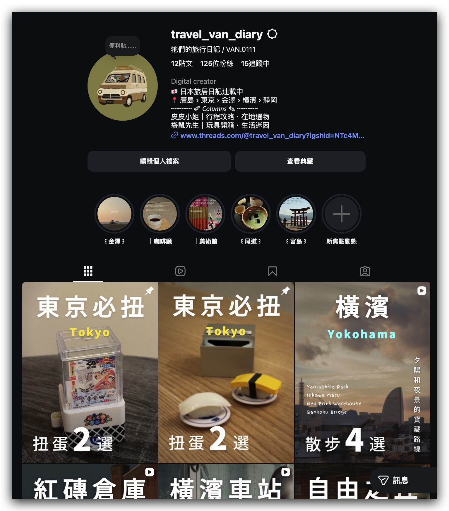
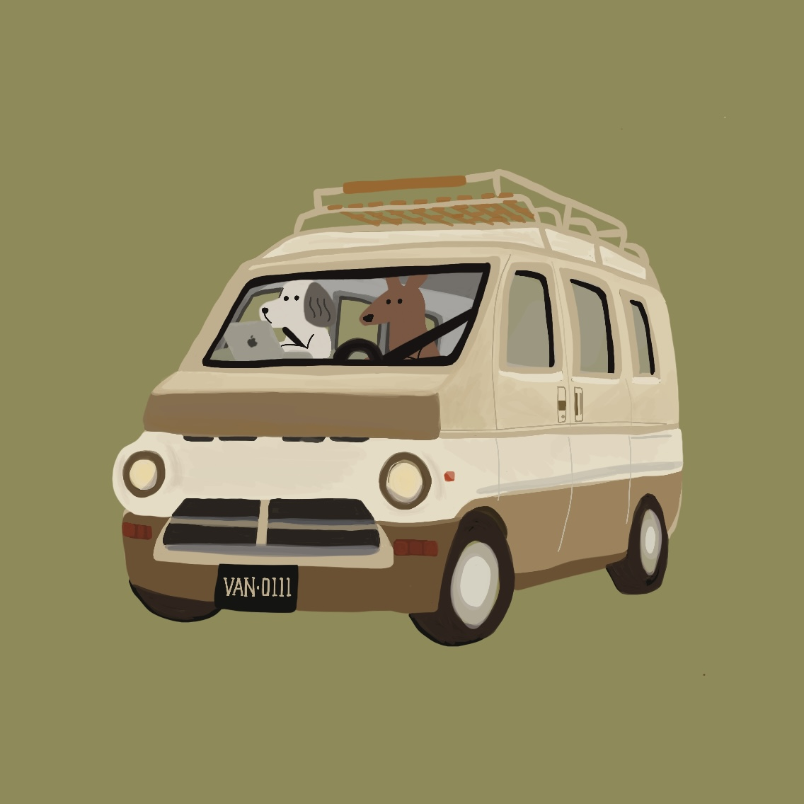

持續經營 / SINCE JULY 2026
從零開始，
持續累積內容成果。
2026 年 7 月開始經營，以每週一支為目標，累積旅居與生活作品。

@travel_van_diary ↗平均觀看3.31萬
觀看中位數0.15萬

TRAVEL VAN DIARY影片剪輯工作室皮皮小姐 × 袋鼠先生 · VIDEO EDITING PORTFOLIO
有節奏的剪輯，有溫度的畫面。
從日本旅居日記到品牌內容，讓好故事被更多人看見。
TRAVEL · LIFESTYLE · PODCAST HIGHLIGHTS
01 / WHY ME?
自己拍、自己剪、自己經營。
從內容成效到合作流程，都有實際經驗。
持續經營 / SINCE JULY 2026
2026 年 7 月開始經營，以每週一支為目標，累積旅居與生活作品。

@travel_van_diary ↗合作經驗 / PM → CREATOR
前軟體接案公司 PM
全遠端工作經驗
從釐清需求、安排時程到整合回饋，
用商業思維，讓每個創意確實落地。
從挑選素材、安排字幕到拿捏音效，親自梳理每個細節，保留故事裡自然的表情與情緒。
MY EDITING TOOLKIT
02 / SELECTED WORKS
經營期間｜2026.07–2026.09
數據截至 2026.09.11 · 精選代表作品
將音效落點與片段切格搭配，讓扭蛋操作有輕重、有停頓，帶出開箱的期待與節奏感。
在壽司旁加上黃色驚嘆線，帶出亮相時的可愛與驚喜。
放大「凍豆腐」並加上描邊，讓商品的趣味細節跳出畫面。
「我以為橫濱只有中華街」在前 2 秒完整交代，用熟悉的印象建立預期，再引出不一樣的橫濱選物路線，讓觀眾想繼續看。
用「橫濱散記」搭配白色貼紙感標籤，建立旅行系列的辨識度。
店名、編號與店家小圖同時出現，逛店畫面也能清楚交代目的地。
第 2 秒立起懸念，開場就用 CTA 引導觀眾看到後面；第 24 秒接上地圖資訊與行動指引，兌現前面的期待。
透過相機拍攝音效與照片切換動畫，把打卡點逐一帶出；讓觀眾像跟著按下快門，也看見每個地點值得留下的畫面。
結尾以「留言『橫濱』，把地圖傳給你」設計 CTA，引導留言互動與後續觸及；再依關鍵字分類有興趣的觀眾，將一次觀看累積為帳號可持續經營的受眾。
04 / 橫式影片系列
以人物與移動中的畫面開場，讓觀眾跟著旅人的視線進入台場，而不是直接羅列景點。
透過船身外觀、空間與內裝的特寫，再帶到人在船上看見的風景，讓觀眾從細節認識船隻特色，也想像置身其中的感受。
從白天的藍綠色海景走向夕陽暖色，以城市剪影留下情緒，讓一天的旅程有完整的結尾。
03 / BEYOND THE EDIT
把觀看後的興趣，
延伸成可以帶走、實際使用的資源。
04 / LET’S WORK TOGETHER
短影音 S
30–60 秒
Reels / TikTok / Shorts
適合快速傳遞一個精彩重點。
短影音 M
60–90 秒
Reels / TikTok / Shorts
讓資訊與故事有更多發揮空間。
精華剪輯
90 秒以上，依需求討論
節目精華 / 情境質感影片
梳理長內容，保留精彩片刻。
INCLUDED